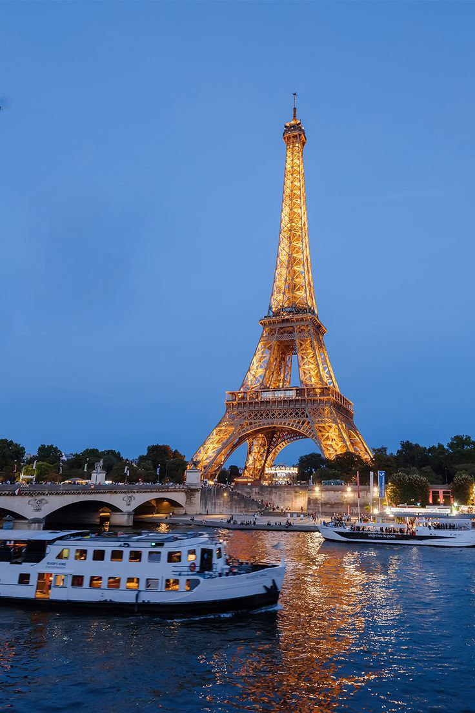

Загальна інформація

Коротка характеристика: Столиця Франції, світовий центр мистецтва, моди, гастрономії та культури.
Чому це місто у моєму списку: Відвідати Париж — це моя велика мрія. Мене надихає його романтична атмосфера, легендарна архітектура та багата мистецька історія. Я дуже хочу побачити вечірню Ейфелеву вежу та прогулятися набережній Сени власними очима.
Цікаві факти
- Ейфелева вежа мала бути тимчасовою спорудою, збудованою для Всесвітньої виставки 1889 року.
- Лувр є найвідвідуванішим художнім музеєм у світі, де зберігається «Мона Ліза».
- Париж часто називають «Містом світла» (La Ville Lumière) завдяки його ранньому впровадженню вуличного освітлення та ролі у добі Просвітництва.
Визначні місця
- Ейфелева вежа
- Музей Лувр
- Собор Паризької Богоматері (Нотр-Дам де Парі)
- Триумфальна арка та Єлисейські Поля
Особиста оцінка
Оцінка: 10/10 — місто-мрія, яке чекає на здійснення.
Дізнатися більше: Париж у Вікіпедії